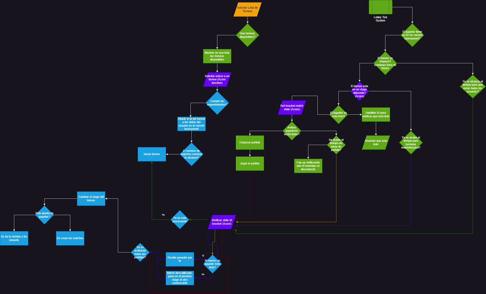

Torunament system
The tournament system is a complex system that has to handle multiple cases and states of the users in order to garantee a correct flow of the tournament. We have to check the state of the whole tournament and the state of each bracket. The state of the players if they are ready or not to fight. The disconnection of players. A lot of variables to take in consideration. Here is a general flow of the system:

🥇🏠Tournament system unity
We start by requesting the tournament list in the bar. We request and display them with the SearchAndShow.cs filtering the ones that hasn't finished yet and then let the user decide one of them. Once the user decides we execute the JoinTournament() in the TournamentSlot.cs. If the joining was a success, we proceed to hide all the things that should be hidden in a tournament such as searching for matches or changing the shinseis position in our vault.
Then we start the timer to wait for the tournament to initiate in the ShowTimerInitTournament() of the TournamentReadyController.cs. This method checks if the tournament has started already, if it doesn't then it proceeds to show the countdown to initiate the tournament. If it has, proceeds to show the ready button for the player to start his current match in the tournament with the StartReadyButton(). This method sets the timer to get ready for the match before a disqualification. If the players clicks on the ready button then the MarkAsReady() method start to execute every X seconds. This method will send a petiton to the azure server to check if the other player also accepted the match. In this method we also check if the player won by default and, if so, then we proceed to show him the time left for the next round to begin with the ShowPendingTimeAfterMatch() . Otherwise, if the two players get ready for the match, the match starts.
Once they finished the match we proceed to check the tournament state every 3 seconds with the method CheckTournamentState() of CheckTournamentState.cs. In this method we send a petion to the server and in it's response we check a variaty of states, ranging from winner of tournament, second place, loser of match and finally winner of match. It's this last case, were we show the player the ShowPendingTimeAfterMatch() method from before, so that he can see the time to end the match. But we keep asking the server if the round has ended before time(if all players have already played their matches). If so then we show again the [StartReadyButton()] and the cycle begins again until there is a winner in the tournament.
🥇🌐Tournaments system server
Sacred tails allows the creation of a Knock Out tournaments between players in the form of elimination.
Create Tournament
This function creates a sharegroup and initializes the necessary values to add a user to this tournament.
module.exports = function (context, req) {
PlayFabServer.CreateSharedGroup(request, (error, result) => {
if (error !== null) {
// Return error to client...
return;
}
request["Data"] = {
initTimeStage_1: ...,
tournamentName: ...,
maxPlayer: ...,
tournamentDuration: ...,
currentStage: 0
};
PlayFabServer.UpdateSharedGroupData(request, (error, result) => {
if (error !== null) {
// Return error to client...
return;
}
// Update also the data in the available tournament playerData
// In order to the client to later get the tournament list
requestData[tournamentId] = JSON.stringify(displayTournamentData);
let displayRequest = { PlayFabId: availableTournamentPID, Data: requestData }
PlayFabServer.UpdateUserData( displayRequest, (error, result) => {
if (error !== null){
// Return error to client...
return;
}
// Return success to client...
});
});
});
}
These are the possible responses for the Create Tournament function:
| Code | Success | Message | Data |
|---|---|---|---|
| 0 | true | 'Tournament Created' | tournamentData |
| 1 | false | 'Could not set display data tournament' | null |
| 2 | false | 'Could set data of tournament' | null |
| 3 | false | 'Could not create tournament' | null |
| 20 | false | 'Please send valid data' | null |
*Tournament data example:
{
"TD-6-123": {
"initTimeStage_1": "2022-12-30T19:44:30.000Z",
"tournamentName": "PRUEBA",
"maxPlayer": 8
}
}
Get Tournament List
With this function, users from the game can see which tournaments are active at the moment and request to join them by code. When a tournament is created, a fake user is added that saves the existing tournaments in its keys, this function downloads all these keys, filters them by hour and displays them.
module.exports = function (context, req) {
let getTounrnamentDataRequest = { PlayFabId: availableTournamentPID }
PlayFabServer.GetUserData(getTounrnamentDataRequest, (error, result) => {
if(error != null){
// Return error to client...
return;
}
// Get all the available tournaments data and add it the torunamentId as part of the data
let data = [];
Object.keys(result.data.Data).forEach(key => {
let tournamentData = JSON.parse(result.data.Data[key].Value);
tournamentData.tournamentId = key;
data.push(tournamentData);
})
//Return data to client
});
}
These are the possible responses for the GetTorunamentList function:
| Code | Success | Message | Data |
|---|---|---|---|
| 0 | true | "here is all tournaments" | tournamentList* |
| 404 | false | err.data | |
| 20 | false | 'Please send valid data' | null |
*TournamentList beign a list of tournaments like these:
{
[
...
{
"initTimeStage_1": "2023-01-23T21:45:45Z",
"tournamentName": "TName",
"maxPlayer": 4,
"tournamentId": "TName_1UVLDn9TZb3"
},
...
]
}
Get Brackets Data
Tournaments have their own function to check the state of the tournament at certain times and that function is this.
The first thing it does is check if this function was called by both players, the player can call it using the ready button within the game, when the function is called it verifies the maximum time limit to notify that it is ready and if one of the two has not called the function, the one who did wins, and if neither of them called it, the game decides that there will be a default winner in the next bracket.
The first time a request arrives where both are marked as ready, the lobby is notified that a fight is ready and what the match ID of that fight is for the tournament, then both players enter a fight.
After everything is processed like in a normal game, the game notifies that there was a winner and the winning player stays calling the function GetCurrentBracketsData
These are the possible responses for the GetBracktsData function:
| Code | Success | Message | Data |
|---|---|---|---|
| 0 | true | "Players are ready" | bracketData |
| 1 | false | "Other player is not ready" | bracketData |
| 2 | false | "Player already marked as ready, other player is not ready yet" | bracketData |
| 3 | false | "Check ready state success" | bracketData |
| 4 | false | "Tournament hasn't started yet" | null |
| 5 | false | "Could not send ready to tournament" | null |
| 20 | false | 'Please send valid data' | null |
*Being bracketData something like this:
{
"PID1": "B2DF0D8F88E6053E",
"PID2": "2C332300EEA8B647",
"matchId": "T97_B2DF0D8F88E6053E_2C332300EEA8B647",
"p1Joined": true,
"p2Joined": true,
"displayName1": "jiufen",
"displayName2": "dardranight"
}
Get Current Brackets Data
In this function, the server verifies that all games have a winner in order to proceed to update the state of the tournament and create the next branches.
These are the possible responses for the GetBracktsData function:
| Code | Success | Message | Data |
|---|---|---|---|
| 0 | true | "Getting current stage brackets success" | stageBracketsData |
| 2 | true | "The tournament has not begun" | null |
| 1 | false | "Error getting current stage of tournament" | null |
| 3 | false | "Error getting brackets" | null |
| 4 | false | "Error getting usersData" | null |
| 20 | false | 'Please send valid data' | null |
*Being stageBracketsData a list of stages with brackets like this:
{
"stages": {
"stage_1": {
"brackets": {
"bracket_1": {
"PID1": "jiufen",
"PID2": "dardranight",
"matchId": "T-2-1_B2DF0D8F88E6053E_2C332300EEA8B647",
"p1Joined": false,
"p2Joined": false
},
...
}
},
"stage_2":{
...
}
}
}